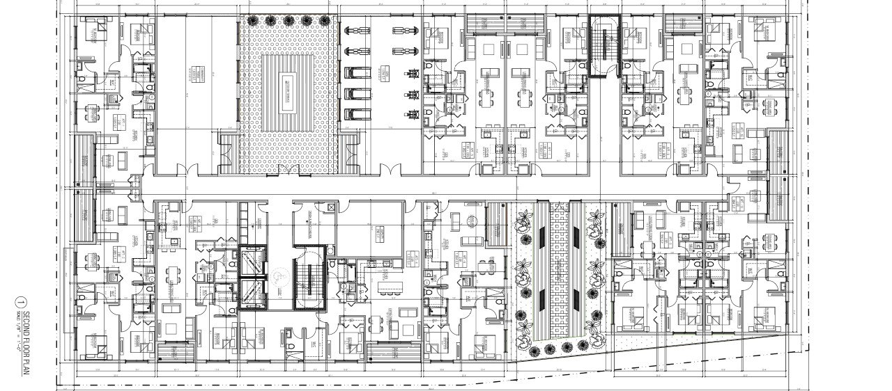
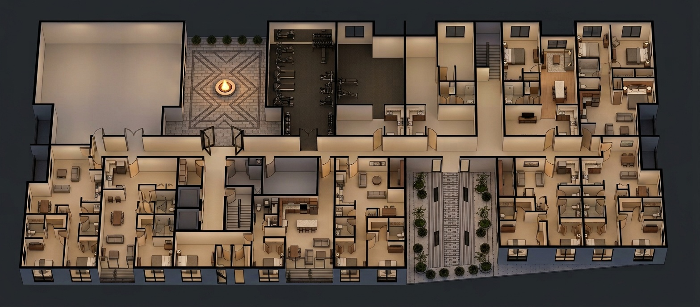
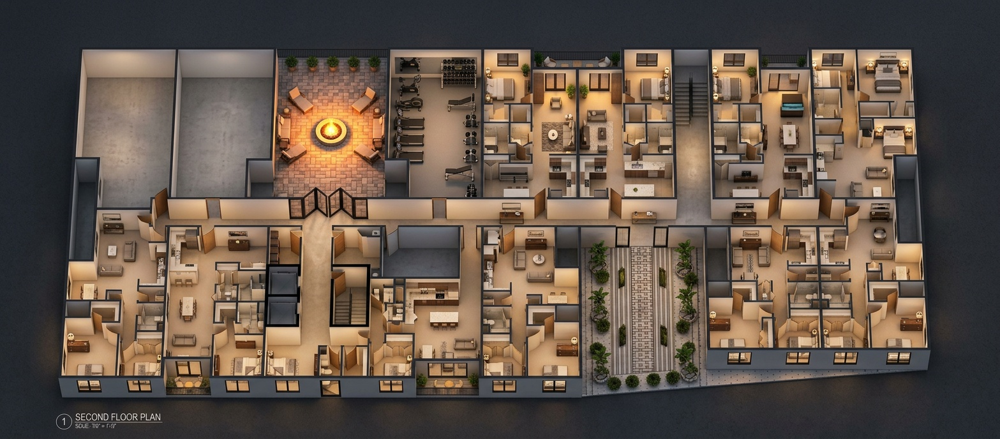
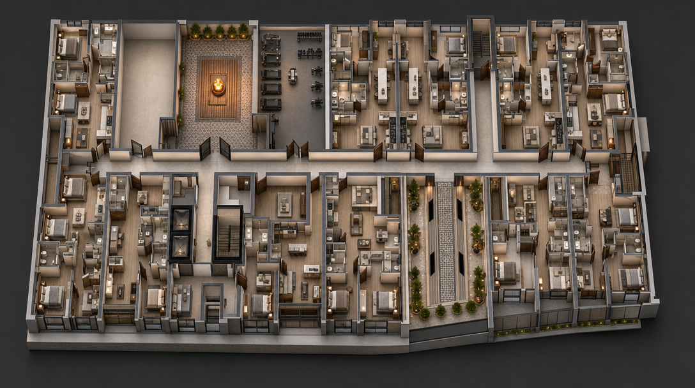
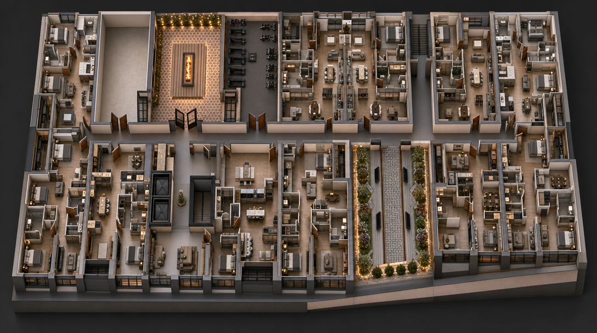

Two folders sit side by side in the project tree. iter-05 and iter-06. Same 2D source plan, same JSON spec, byte-identical down to the line breaks. The folder on the left was rendered through Nano Banana 2. The folder on the right was rendered through GPT Image 2 about an hour ago. There's a client meeting at 9am tomorrow and the renders need to go out tonight. Decision time. We open both.
What was supposed to be a sanity check turns into a quietly important experiment. Same building, two models, two different buildings.
NB2 holds your building. GPT Image 2 makes a different building, just prettier.
For client-facing renders that have to match the model you drew, Nano Banana 2 wins on every axis that matters: layout fidelity, room count, aspect ratio, speed, cost. For mood-board and atmosphere work where the building doesn't yet have to exist, GPT Image 2's stronger lighting and material rendering earn it a place in the stack. The newer model is not the better model for this job.
The setup, in five lines
The source is a second-floor plan from a current Vista Studios multi-unit residential project, anonymised for publication. Wide horizontal aspect, roughly 1,560 by 690 pixels, fully detailed: every apartment unit drawn through, every fixture in the bathrooms, the gym equipment laid out, the central courtyard and its fire pit at the building's heart. The plan that goes to the printer, not the marketing concept.
One JSON spec, frozen from iter-05. 2,467 characters of structured object, wrapped in a 2,781-character prose preamble. The spec encodes every fidelity rule we'd normally hold in our heads and quietly violate at iteration four: preserve every wall, do not add rooms not in source, do not change wall thickness, only add furniture and decor. The discipline is the spec. Without it, every iter drifts a little, and by iter-04 you're presenting a building that looks like the building you drew if you squint.
Two variants per model, four renders total. Same input image, same prompt payload, same edit endpoint. The only changes between iter-05 and iter-06 are the model and the prompt encoding (NB2 took the prose form, GPT Image 2 took the structured-JSON form). Everything else is locked. If the renders come back different, the model is what made them different.
The source plan

Nano Banana 2, iter-05
Two variants, 37 seconds each, $0.04 a piece. The output comes back at 1567 by 688, the source aspect ratio preserved nearly to the pixel. NB2 reads the JSON structure and produces, with very little drama, the building you drew. Roof off. Walls intact. The fire pit glowing in the centre of the courtyard where you put it. The gym is the gym, the apartments are the apartments, the garden running through the lower spine is unmistakably the garden running through the lower spine of the source plan. NB2 does not surprise you, which is the entire point.


GPT Image 2, iter-06
Same JSON spec. Same source plan. Different model, different endpoint, different result, in roughly that order of importance. Two variants at 132 seconds each, three and a half times slower than NB2. The output comes back compressed from the source's wide horizontal footprint into something close to a square, the way a phone photo of a long building always ends up wrong on the short side. The materials read more believable at the surface. The lighting is warmer, the shadows softer, the mood frankly cinematic. If we'd never seen the source plan, we'd have called it a beautiful render.
We have seen the source plan. It is a different building.


Look at the courtyard. The fire pit is there. The geometric paver pattern is gone, replaced by something closer to terrazzo tile in a hotel lobby. The empty side room we wrote into the spec twice, in capital letters, ONE room not two, no internal partition, comes back split with a partition the source plan never had. Walls move. Apartment count drifts. The whole footprint has been compressed to fit the model's preferred aspect, which is the most damning thing about the result, because that compression is a decision the building never asked the model to make.
None of which makes GPT Image 2 a bad model. It makes it a different one. Asked to interpret a 2D plan as a starting point for a more cinematic version of the same idea, it does that, well. Asked to preserve the plan, it edits it. The mistake in interpreting this output isn't the model's. It's the architect's, the moment they treat the render as a faithful version of the building they drew.
Six axes, scored
| Axis | NB2 (iter-05) | GPT-2 (iter-06) | Winner |
|---|---|---|---|
| Layout fidelity | High (1:1 with 2D) | Low (reinterprets) | NB2 |
| Aspect preservation | Yes (1567×688) | No (squared off) | NB2 |
| Wall / room count | Match | Hallucinated extras | NB2 |
| Mood / cinematic feel | Good | Stronger | GPT-2 |
| Wall-time per variant | ~37s | ~132s (3.5× slower) | NB2 |
| Cost per variant | ~$0.04 | fal credit pool | NB2 |
Five axes to NB2, one to GPT-2. The single category GPT Image 2 wins is real, though, and worth saying clearly: GPT Image 2 makes a more seductive image. If your job that afternoon is pitch-deck atmosphere rather than client-presentation accuracy, the one win can quietly outweigh the other five. We've sent GPT-2 outputs to clients on purpose, when the brief was mood and not measurement. The trick is knowing which job you're on before you choose the model.
What's actually happening here, beyond the table, is that the AI rendering category just stopped having a single winner. The honest read on 2026 isn't that AI rendering got better. It got plural. There is no longer a default model an architect can grab without thinking about what stage of the project they're on. NB2, GPT Image 2, FLUX architectural fine-tunes, the next thing on fal.ai next month, they aren't converging on one answer. They're specialising into different jobs. The architects making this look easy are the ones who quietly built a folder structure that lets them swap models per iter, instead of arguing about which one is best.
The JSON spec, and why it matters
Both models received the same prompt object, expressed as a JSON structure inside a short prose wrapper. A flavor of what's in there:
We've been telling these models in plain English to preserve our buildings for two years. They've been politely ignoring us for two years. JSON is what happens when you stop asking and start specifying. NB2 reads the structure and treats the fidelity rules as constraints rather than suggestions, and the gap between iter-04 (prose) and iter-05 (JSON) was bigger than the gap between any two prose iters that came before it. Worth restructuring your prompt library for.
JSON does not override a model's biases, though. GPT Image 2 read the same structured rules and produced renders with hallucinated rooms anyway. The model's underlying composition logic does what it was trained to do, which is produce a beautiful image. The plan is the input. It was never the law. The first model that treats a structured prompt the way an API treats an OpenAPI schema, as a contract rather than a vibe, will rewrite this comparison. Until then: structure your prompts, but don't expect the structure to fight the model's training for you.
Picking the right model, per stage
The question that matters is not which model is better. It is which model is right for the stage of your project.
Concept and competition imagery. Building doesn't fully exist yet. You need atmosphere, mood, an image that sells a feeling. GPT Image 2 is fine here. It will produce a striking render even from a rough massing. Just don't tell yourself the result is "your" building.
Schematic-design coordination. Layout matters but tolerances are loose. Either model works, and the choice is workflow-driven (whichever endpoint your pipeline already calls). NB2 is faster and cheaper, so default there unless you specifically want GPT Image 2's lighting.
Client-facing renders, design-development through CD. The render must depict the building you actually drew, room for room, wall for wall. NB2, full stop. Or use Veras 4.0 (which runs NB2 underneath, see our NB2 explainer for what's actually in there) inside SketchUp or Revit and skip the prompt-engineering layer entirely.
The reproducible workflow
If you want to run this same comparison on your own plan, the steps are short:
- Freeze your spec as a JSON object with explicit fidelity rules. Wrap it in a one-paragraph prose preamble.
- Submit the same payload to both edit endpoints. NB2 via fal.ai or Chaos developer access; GPT Image 2 via the OpenAI Images API or fal.ai's
fal-ai/gpt-image-2/editroute. - Run two variants per model. Save both with a manifest of timings, costs, and the input URLs.
- Score the six axes above, 1 to 5 each. Layout fidelity, aspect preservation, room count, mood, time, cost.
- Map the winner to your project stage. The same comparison flips conclusion depending on whether you're producing concept boards or client renders.
The whole sequence takes about 15 minutes once the test rig is wired. We keep the test rig in a project sub-folder named floor-plan-renders/test-run-NNN/iter-NN-MODEL/ with a small run.py per iter that pulls from the same source-plan and writes a manifest.json. Cheap to reproduce, cheap to compare.
The right rendering model isn't a quarterly subscription decision. It's a per-job pick, made against the spec you can defend at the next client meeting.
What's worth watching
OpenAI's direct billing came back online for us shortly after this run, which means future iterations can skip the fal.ai middle layer for GPT Image 2 work. Expect modest speed gains and possibly different output as direct OpenAI bypasses any fal-side defaults. We will publish the delta if the gap is meaningful.
Open-weights models continue to close the gap on geometry fidelity. FLUX and successors keep landing architectural-grade outputs in ComfyUI workflows. If a downloadable model lands that matches NB2 on layout preservation, the licensing economics of the proprietary stack shift. We are tracking quarterly. Nothing has flipped yet.
And the prompt-format frontier stays open. Structured JSON beat prose in our test for both models, but neither model has been fine-tuned to obey a JSON schema in the way an API does. The first model that treats a structured prompt like a contract rather than a suggestion will rewrite this comparison.
For now, the honest read is short. Newer model. Slower render. Wrong building. Quietly beautiful. The rendering category just stopped having a winner. Pick yours per project, not per press release, and keep both folders in the tree.
Tested by Vista Studios on a live residential project, 2026-05-04. Source plan anonymised. No affiliate relationships with OpenAI, Google, or fal.ai.